Elevators
This document introduces Elevators feature.
Updated 30.06.2021
Version History
| Version | Date | Author | Change |
|---|---|---|---|
| 1.0 | 30.06.2021 | Toni Liski | Document created |
| 1.1 | 06.10.2021 | Aleksi Ålander | Added new parameters |
Introduction
Navithor Fleet Control supports currently simple implementation of multi-level environment. It means that in the same production area, there is possibility to define separate areas which are linked together with so called LevelChange points. These points can lead to several floors in the building (connected to several LevelChange points) and Fleet Control can plan the routes from the area to another using these links.
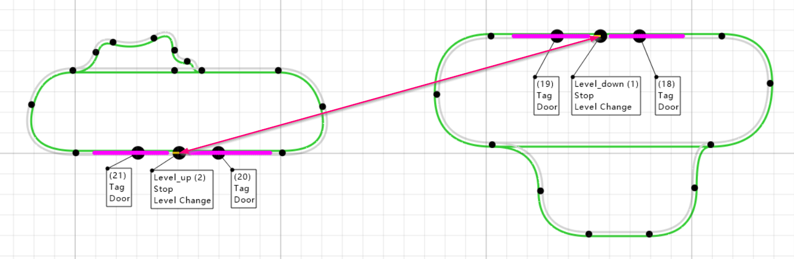
Figure: Simple environment with two levels. Connection between levels is shown with a red arrow.
Navithor Tools
Activating the built-in elevator logic requires two steps to be done in Navithor Tools.
- All LevelChange points must have Level ID specified
- All LevelChange points and Doors in the same Elevator must be grouped to same SymbolicPoint group
Add LevelChange points
Firstly, environment must be built normally. In the example Figure below, the Elevator is built so that route is cut inside the Elevator to prevent machines from using Elevator as a drive-through route. This means that route end-point must have LevelChange point which leads to another level (SymbolicPoint 1158 in this example), and route start-point must have LevelChange point which is the target point from another level (symbolic point 1157).
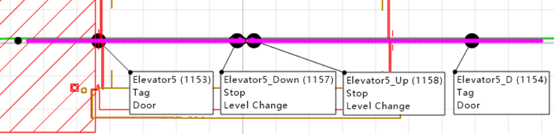
Figure: Two LevelChange points defined for one floor to prevent driving through the Elevator.
To create LevelChange point:
- Create normal SymbolicPoint on the route
- Select any Type, for example, Stop
- Tick LevelChange from Symbolic Point Settings
- Specify Level ID in the field shown in the picture.

Figure: Set Level ID for LevelChange point in Tools.
To specify the target point where this LevelChange point leads, go to Edit Destinations and Resources section and select Allowed Destinations tab.
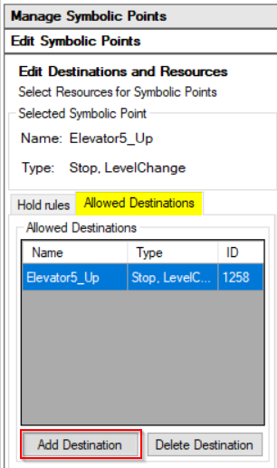
Figure: Specify LevelChange point in Navithor Tools.
From there you can add target level by clicking first Add Destination, select the target LevelChange symbolic point (ID 1258 in this example) and press Add Destination again to confirm the selection. If multiple floors can be accessed from this point, add all LevelChange points which should be connected.
If the link is only one-way, then this is all what is required. If routing back from another floor to this point should be possible, allow routing to opposite direction by adding this symbolic point to list of Allowed Destinations of opposite symbolic point (ID 1258 in this example).
Define Elevator Doors
Elevator needs always a door on each floor to control the access to/from elevator. Door can be placed at the physical door location, and changing Door Distance parameters it is possible to make machine to stop at the intended distance in front of the elevator. If elevator is only one-sided, it is good practice to make machine to stop in front of the elevator so that outgoing machine can bypass the incoming machine.
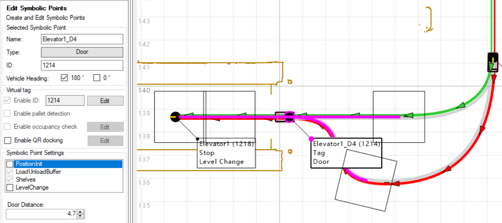
Figure: Define Door SymbolicPoints for Elevator.
Define SymbolicPoint Groups
For two floor environments it would be enough just to define LevelChange points, link them together and add doors. Doors could be controlled as a normal door and PLC will handle the elevator requests with sensors, for example. However, in order to enable full elevator logic (recommended), it is required to group all the symbolicpoints in single elevator together. There are two options:
- Only group LevelChange points and handle doors separately with TagStatus messages
- Group Doors and LevelChange points in the same group, and everything will be controlled with ElevatorRequest/ElevatorStatus messages
To create a symbolic point group, navigate to Manage Symbolic Point Groups in the left menu. Enter the name and ID for the Elevator, as shown in Figure, and press Create. Select the newly created Symbolic Point Group from the dropdown menu and click Add Point. Now click all the symbolicpoints in the map, which belong to the same elevator group. Symbolic point will get a bolded circle around it when it is grouped successfully. When all points have been added, press Add Point again to confirm the selection. Repeat this process for each elevator in the system.
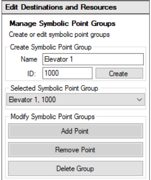
Figure: Add Elevator group.
Elevators in Navithor Fleet Control
Navithor creates Elevators automatically based on the given route network. If there exists any LevelChange point which belongs to SymbolicPoint Group, it is considered as Elevator. The Elevator container will join together all LevelChange points in the same group, and all Doors which belong to the group and are found close enough to the LevelChange points.
To enable Elevator control, MES client must subscribe the ElevatorRequest messages. According to the ElevatorStatus messages from MES client, the Elevator can be used for routing, and depending the current level and reservations, the Elevator will have different penalties.
Parameters
Elevators can be adjusted with following Navithor parameters.
MissionManager_ElevatorAverageTimeToMoveFromFloorToFloor
This parameter can be used to estimate time to reach target floor, if more detailed information from MES is not available.
MissionManager_ElevatorRequestTimeBeforeArrival
This parameter can be used to define how much earlier the machine is estimated to arrive at the elevator it should request the elevator to that floor. Defined as a time instead of distance, so that different routes to different elevators would be considered.
MissionManager_ElevatorReservationTimeout
This parameter can be used to define a period of time that machine should keep the same elevator reserved to itself, even if machine is in estop or error and the drive task is not progressing. After the timeout, the elevator reservation is released and the AGV will recalculate the whole route after it can progress the task again. If machine is disabled, the reservation is released immediately.
Situations where machine task is considered as interrupted:
- Machine is driving towards the elevator and speed is near zero
- No LevelChange point is found on the route anymore
- Machine has EStop or Error active
- Machine state is not AUTO
- Machine is no more in production
RoutePlanner_LevelChangeLocationPriorityPenalty
Additional routeplanning penalty based on the location priority set to the level change point. Applied when crossing through a level change point.
RoutePlanner_LevelChangeDrivingThroughAllowed
This parameter defines if driving through the level change point without changing level is allowed or not. On default set to true, which means driving through level change points is allowed.
MissionManager_ElevatorReservationResetDistance
This parameter defines the maximum distance in meters to the current elevator reservation to keep the reservation, in case machine is taken out of production. If machine is further away, discard the reservation without waiting for the timeout. On default parameter is set to 10 meters to avoid accidentally giving away a reservation of the elevator for machine that is already very close to the elevator. This could easily cause issues with traffic, in case the elevator would be then reserved by another machine.
MES Interface
To control Elevators over the MES interface, at least the following messages must be implemented (see detailed specification in the MES Interface documentation).
- MESMessageSubscription
- ElevatorStatus
- ElevatorRequest
Requests for each elevator must be subscribed by at least one Client (PLC). Subscription is done using MESMessageSubscription message for type ElevatorRequest. Once requests are subscribed, Navithor starts sending ElevatorRequest messages to request the ElevatorStatus message from the Client, or to control Elevator to given floor. Intervals for sending the requests can be specified in seconds, when making the subscription.
If there are no machines planned to use Elevator, the ElevatorRequest has a RequestType = 0 (Status request) specified. In this case Navithor is only requesting the ElevatorStatus message, containing in which floor Elevator currently is, the operational status etc.
If there is a machine planned to use the elevator, and machine is close enough to elevator (see parameter MissionManager_ElevatorRequestTimeBeforeArrival), the ElevatorRequest message has a RequestType = 1 (RequestToFloor). Then more data about machine and target floors are added in the ElevatorRequest message.
Note! Both RequestTypes should be always replied with ElevatorStatus message. No separate request is sent for status message, if machine is requesting the Elevator to specific floor.
In addition to new messages, AgvStatus message has been updated to contain new fields NextLevelChangePoint and DistanceToNextLevelChange, which can be used to detect if machine is going through any Elevator. See MES Interface specification for more detailed information.
Elevator Request Logic in Navithor
Once machine gets order assigned, next part is to plan route to from machine location to target location. Route planner algorithm tries to minimize the cost (penalty) of the route in order to select the best possible route. Elevator logic adds now possibility to specify penalties for elevators based on the LevelChange point location penalty, and in addition to penalties which are caused by the delay that Elevator actually needs to drive to correct floor first, in case it is on another floor. See more details in the Section Penalty Calculation.
Once the best route is found, machine starts driving towards the elevator. At that moment Elevator logic is still requesting only Elevator status over the MES interface. When machine proceeds and reaches the point where the estimated travel time to elevator is less than the parameter MissionManager_ElevatorRequestTimeBeforeArrival, Elevator will send request over the MES to move Elevator to floor where machine is going to enter the Elevator from.
Once Elevator reaches the target floor, doors must be opened (controlled by PLC), and this Elevator and Door status information must be sent to Navithor over the ElevatorStatus message.
When the doors are open, machine can enter the Elevator. Machine drives into Elevator until it reaches the LevelChange symbolic point defined. When machine as at the symbolic point, Elevator logic will request Elevator to move the target floor, by sending the ElevatorRequest message and having there RequestToFloor level as a target floor level.
Once Elevator reaches the target floor, opens door and sends the status over ElevatorStatus message, machine can drive out and continue it's task.
Once Machine exits the doors, the machine reservation for the Elevator is automatically deleted and Elevator is considered free. No more RequestToFloor messages are sent, instead only Elevator status request.
Multiple Reservations
It is possible to reserve elevator for multiple machines simultaneously. For each floor, two machines can plan the route through the elevator simultaneously. First reservation is always the priority reservation, but in case another machine has made a reservation for the Elevator to enter from another floor and following conditions are fulfilled, the priority reservation changes. In order to change the priority machine:
- Only machine which is closest to elevator can be changed to priority machine
- If closest machine is arriving from the same floor as priority machine, priority machine cannot be changed
- If closest machine is arriving from the same floor where elevator currently is, it is changed to priority machine
- If closest machine is arriving from another floor where elevator currently is, but the arrival time is later than parameter MissionManager_ElevatorAverageTimeToMoveFromFloorToFloor defines, closest machine can be changed to priority machine.
Penalty Calculation
There will be an additional penalty based on the existing elevator reservations and its current floor calculated with the following steps:
-
Each existing reservation will add MissionManager_ElevatorAverageTimeToMoveFromFloorToFloor value as a penalty for using this elevator on the route. This means that even if the reservation starts from and targets the same floor (driving through the elevator) the penalty is added.
-
Each change of the elevator floor in between the existing reservations will add the same MissionManager_ElevatorAverageTimeToMoveFromFloorToFloor value as a penalty. For example, the previous reservation targets the first floor and the next reservation starts from the second floor. This step also takes into account the initial change of the elevator floor if its current floor differs from the floor where the first reservation starts from. However, no penalty is added if there is no change of the elevator floor in between the reservations and the elevator's initial state (the elevator stays at the same floor).
-
After all the reservations are taken into account the resulting elevator floor (the current floor in case there were no reservations) is checked against the floor of the source LevelChange location on the route. If they differ then the same MissionManager_ElevatorAverageTimeToMoveFromFloorToFloor value is added as a penalty. Else no penalty is added at this step.
-
At this point if the accumulated penalty is less than the estimated driving time for the machine to reach the elevator then the elevator call penalty is considered to be zero (the elevator must be already on the correct floor when the machine arrives). Otherwise, the elevator call penalty is the difference between the accumulated penalty and the estimated driving time (the machine will wait for the elevator).
-
Finally, MissionManager_ElevatorAverageTimeToMoveFromFloorToFloor value is added to the elevator call penalty and the result is considered as the actual penalty for using the elevator on the route. This means that even if the elevator is used for driving through it the penalty is added.
Amount of additional penalty based on LevelChange location priority can be configured with parameter RoutePlanner_LevelChangeLocationPriorityPenalty. If parameter value is zero, no additional location priority penalty is applied.
Additional penalty is calculated by the following formula:
AdditionalPenalty = (Priority.HIGHEST - LevelChangeSymbolicPointLocationPriority) * RoutePlanner_LevelChangeLocationPriorityPenalty
Elevator Status Visualization in Navithor Client
When the elevator group is defined, this elevator state is visualized in Client with an icon displaying current status, current level and name of the elevator. Elevator icon is displayed nearby one of LevelChange locations on the map, one for each elevator at each floor.
Displayed elevator states:
| State | Icon |
|---|---|
| Not defined | 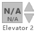 |
| Init | 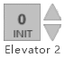 |
| Automatic | 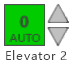 |
| AutomaticMoving | 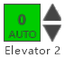 |
| Manual | 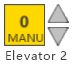 |
| OutOfService | 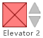 |